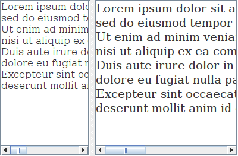
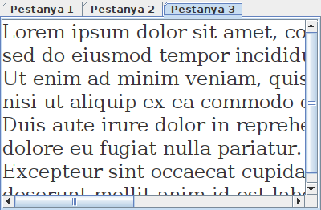

Es un contenidor dividit en dues zones separades per una barra horitzontal o vertical que es pot desplaçar per modificar la mida de les dues àrees.
Per triar la distribució en horitzontal o vertical cal posar en el primer paràmetre del constructor:
Per posar un component en una de les zones cal utilitzar les següents comandes:
També hi ha mètodes per obtenir i modificar al posició i la mida de la barra divisòria.
JTextArea textArea1 = new JTextArea();
textArea1.setFont(new Font("Serif", Font.PLAIN, 16));
textArea1.setText(text);
JTextArea textArea2 = new JTextArea();
textArea2.setFont(new Font("Serif", Font.PLAIN, 20));
textArea2.setText(text);
Dimension minimumSize = new Dimension(100, 50);
textArea1.setMinimumSize(minimumSize);
textArea2.setMinimumSize(minimumSize);
JSplitPane splitPane = new JSplitPane(JSplitPane.HORIZONTAL_SPLIT, textArea1, textArea2);
splitPane.setDividerLocation(150);
finestra.setContentPane(splitPane); // Canvia el contenidor principal
És recomanable ficar els components dins d'un JScrollPane i afegir aquests objectes al JSplitPane.

Aquest contenidor permet crear diferents zones posades unes sobre les altres i accedir-hi a través d'unes pestanyes situades en la part superior.
Per afegir noves pestanyes cal utilitzar la comanda addTab() amb el nom de la pestanya i el component.
JTextArea textArea1 = new JTextArea();
textArea1.setFont(new Font("Serif", Font.PLAIN, 16));
textArea1.setText(text);
JTextArea textArea2 = new JTextArea();
textArea2.setFont(new Font("Serif", Font.PLAIN, 20));
textArea2.setText(text);
JTextArea textArea3 = new JTextArea();
textArea3.setFont(new Font("Serif", Font.PLAIN, 24));
textArea3.setText(text);
JTabbedPane tabbedPane = new JTabbedPane();
tabbedPane.addTab("Pestanya 1", textArea1);
tabbedPane.addTab("Pestanya 2", textArea2);
tabbedPane.addTab("Pestanya 3", textArea3);
finestra.setContentPane(tabbedPane); // Canvia el contenidor principal
És recomanable ficar els components dins d'un JScrollPane i afegir aquests objectes al JTabbedPane.
